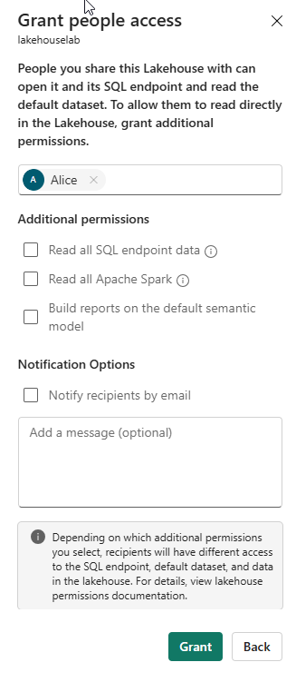

Lab 19 ~ Secure data access in Microsoft Fabric
Microsoft Fabric has a multi-layer security model for managing data access. Security can be set for an entire workspace, for individual items, or through granular permissions in each Fabric engine. In this exercise, you secure data using workspace, and item access controls and OneLake data access roles.
This lab takes approximately 45 minutes to complete.
Step 1: Signing in to Microsoft Fabric
In this lab, you will sign in to Microsoft Fabric using the email and password from the QA Platform.
-
Using an incognito/private mode browser tab navigate to the Fabric portal at: https://fabric.microsoft.com
-
Follow the prompts, and sign in with the user credentials from the QA Platform:
- Password
-
After signing in, you will be redirected to the Fabric home page:

Step 2: Create a workspace
Before working with data in Fabric, you need to create a workspace with the Fabric trial enabled.
-
Navigate to the Microsoft Fabric home page in an incognito/private mode browser tab browser, and sign in with the Fabric credentials from the QA Platform.
-
In the menu bar on the left, select Workspaces (the icon looks similar to 🗇).
-
Create a New workspace:
- Give it a name of your choice. For example:
fab_workspace - Leave all other options as the default values
- Click Apply
- Give it a name of your choice. For example:
-
When your new workspace opens, it should be empty.

Note: When you create a workspace, you automatically become a member of the Workspace Admin role.
Create a data warehouse
Next, create a data warehouse in the workspace you created:
-
Click + New Item. On the New item page, under the Store Data section, select Sample warehouse and create a new data warehouse with a name of your choice.
After a minute or so, a new warehouse will be created:

Create a lakehouse
Next, create a lakehouse in the workspace you created.
-
In the menu bar on the left, select Workspaces (the icon looks similar to 🗇).
-
Select the workspace you created.
-
In the workspace, select the + New Item button and then select Lakehouse. Create a new Lakehouse with the name of your choice.
After a minute or so, a new Lakehouse will be created:
!!! quote ""

- Select the Start with sample data tile and then select the Public holidays sample. After a minute or so, the lakehouse will be populated with data.
Apply workspace access controls
Workspace roles are used to control access to workspaces and the content within them. Workspace roles can be assigned when users need to see all items in a workspace, when they need to manage workspace access, or create new Fabric items, or when they need specific permissions to view, modify or share content in the workspace.
In this exercise, you add a user to a workspace role, apply permissions and, see what is viewable when each set of permissions is applied. You open two browsers and sign-in as different users. In one browser, you'll be a Workspace Admin and in the other, you'll sign-in as a second, less privileged user. In one browser, the Workspace Admin changes permissions for the second user and in the second browser, you're able to see the effects of changing permissions.
-
In the menu bar on the left, select Workspaces (the icon looks similar to 🗇).
-
Next select the workspace you created.
-
Select on Manage access on the top of the screen.
Note: You'll see the user you're logged, who is a a member of the Workspace Admin role because you created the workspace. No other users are assigned access to the workspace yet.
-
Next, you'll see what a user without permissions on the workspace can view. In your browser, open an InPrivate window. In the Microsoft Edge browser, select the ellipse at the top right corner and select New InPrivate Window.
-
Enter https://app.fabric.microsoft.com and sign-in as the second user you're using for testing.
-
On the bottom left corner of your screen, select Microsoft Fabric and then select Data Warehouse. Next select Workspaces (the icon looks similar to 🗇).
Note: The second user doesn't have access to the workspace, so it's not viewable.
-
Next, you assign the Workspace Viewer role to the second user and see that the role grants read access to the warehouse in the workspace.
-
Return to the browser window where you're logged in as the Workspace Admin. Ensure you're still on the page that shows the workspace you created. It should have your new workspace items, and the sample warehouse and lakehouse, listed at the bottom of the page.
-
Select Manage access at the top right of the screen.
-
Select Add people or groups. Enter the email of the second user you're testing with. Select Add to assign the user to the workspace Viewer role.
-
Return to the InPrivate browser window where you're logged in as the second user and select refresh button on the browser to refresh session permissions assigned to the second user.
-
Select the Workspaces icon on the left menu bar (the icon looks similar to 🗇) and select on the workspace name you created as the Workspace Admin user. The second user can now see all of the items in the workspace because they were assigned the Workspace Viewer role.

-
Select the warehouse and open it.
-
Select the Date table and wait for the rows to be loaded. You can see the rows because as a member of the Workspace Viewer role, you have CONNECT and ReadData permission on tables in the warehouse. For more information on permissions granted to the Workspace Viewer role, see Workspace roles.
-
Next, select the Workspaces icon on the left menu bar, then select the lakehouse.
-
When the lakehouse opens, click on the dropdown box at the top right corner of the screen that says Lakehouse and select SQL analytics endpoint.
-
Select the publicholidays table and wait for the data to be displayed. Data in the lakehouse table is readable from the SQL analytics endpoint because the user is a member of the Workspace Viewer role that grants read permissions on the SQL analytics endpoint.
Apply item access control
Item permissions control access to individual Fabric items within a workspace, like warehouses, lakehouses and semantic models. In this exercise, you remove the Workspace Viewer permissions applied in the previous exercise and then apply item level permissions on the warehouse so a less privileged user can only view the warehouse data, not the lakehouse data.
-
Return to the browser window where you're logged in as the Workspace Admin. Select Workspaces from the left navigation pane.
-
Select the workspace that you created to open it.
-
Select Manage access from the top of the screen.
-
Select the word Viewer under the name of the second user. On the menu that appears, select Remove.

-
Close the Manage access section.
-
In the workspace, hover over the name of your warehouse and an ellipse (...) will appear. Select the ellipse and select Manage permissions
-
Select Add user and enter the name of the second user.
-
In the box that appears, under Additional permissions check Read all data using SQL (ReadData) and uncheck all other boxes.

-
Select Grant
-
Return to the browser window where you're logged in as the second user. Refresh the browser view.
-
The second user no longer has access to the workspace and instead has access to only the warehouse. You can no longer browse workspaces on the left navigation pane to find the warehouse. Select OneLake on the left navigation menu to find the warehouse.
-
Select the warehouse. On the screen that appears, select Open from the top menu bar.
-
When the warehouse view appears, select the Date table to view table data. The rows are viewable because the user still has read access to the warehouse because ReadData permissions were applied by using item permissions on the warehouse.
Apply OneLake data access roles in a Lakehouse
OneLake data access roles let you create custom roles within a Lakehouse and grant read permissions to folders you specify. OneLake data access roles is currently a Preview feature.
In this exercise, you assign an item permission and create a OneLake data access role and experiment with how they work together to restrict access to data in a Lakehouse.
-
Stay in the browser where you're logged in as the second user.
-
Select OneLake on the left navigation bar. The second user doesn't see the lakehouse.
-
Return to the browser where you're logged in as the Workspace Admin.
-
Select Workspaces on the left menu and select your workspace. Hover over the name of the lakehouse.
-
Select on the ellipse (...) to the right of the ellipse and select Manage permissions

-
On the screen that appears, select Add user.
-
Assign the second user to the lakehouse and ensure none of the checkboxes on the Grant People Access window are checked.

-
Select Grant. The second user now has read permissions on the lakehouse. Read permission only allows the user to see metadata for the lakehouse but not the underlying data. Next we'll validate this.
-
Return to the browser where you're logged in as the second user. Refresh the browser.
-
Select OneLake in the left navigation pane.
-
Select the lakehouse and open it.
-
Select Open on the top menu bar. You're unable to expand the tables or files even though read permission was granted. Next, you grant the second user access to a specific folder using OneLake data access permissions.
-
Return to the browser where you're logged in as the workspace administrator.
-
Select Workspaces from the left navigation bar.
-
Select your workspace name.
-
Select the lakehouse.
When the lakehouse opens, select Manage OneLake data access on the top menu bar and enable the feature by clicking the Continue button.

-
Select new role on the Manage OneLake data access (preview) screen that appears.

-
Create a new role called publicholidays that can only access the publicholidays folder as shown in the screenshot below.

-
When the role finishes creating, select Assign role and assign the role to your second user, select Add and, select Save.

-
Return to the browser where you're logged in as the second user. Ensure you're still on the page where the lakehouse is open. Refresh the browser.
-
Select the publicholidays table and wait for the data to load. Only the data in the publicholidays table is accessible to the user because the user was assigned to the custom OneLake data access role. The role permits them to see only the data in the publicholidays table, not data in any of the other tables, files, or folders.
Clean up resources
In this exercise, you secured data using workspace access controls, item access controls and, OneLake data access roles.
-
Navigate to Microsoft Fabric in your browser.
-
In the bar on the left, select the icon for your workspace to view all of the items it contains.
-
Select Workspace settings and in the General section, scroll down and select Remove this workspace.
-
Select Delete to delete the workspace.